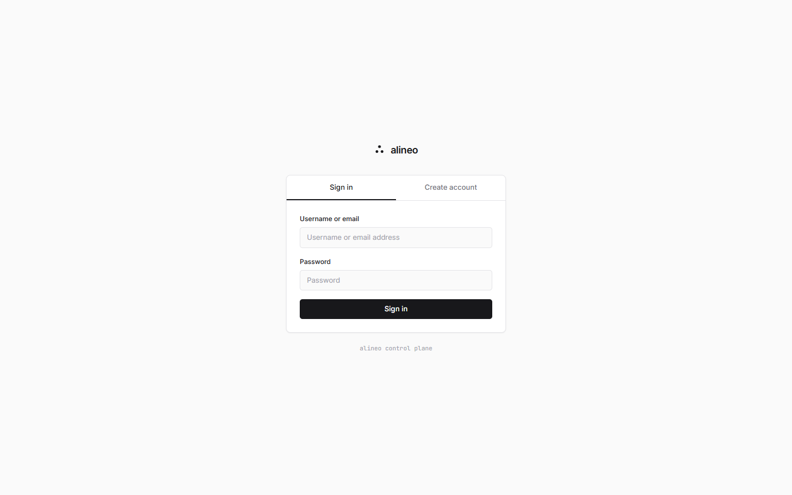
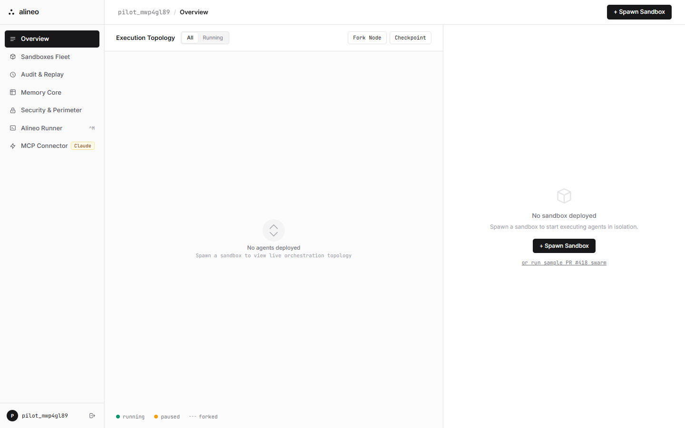
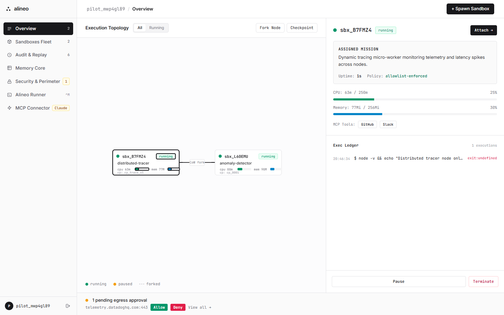
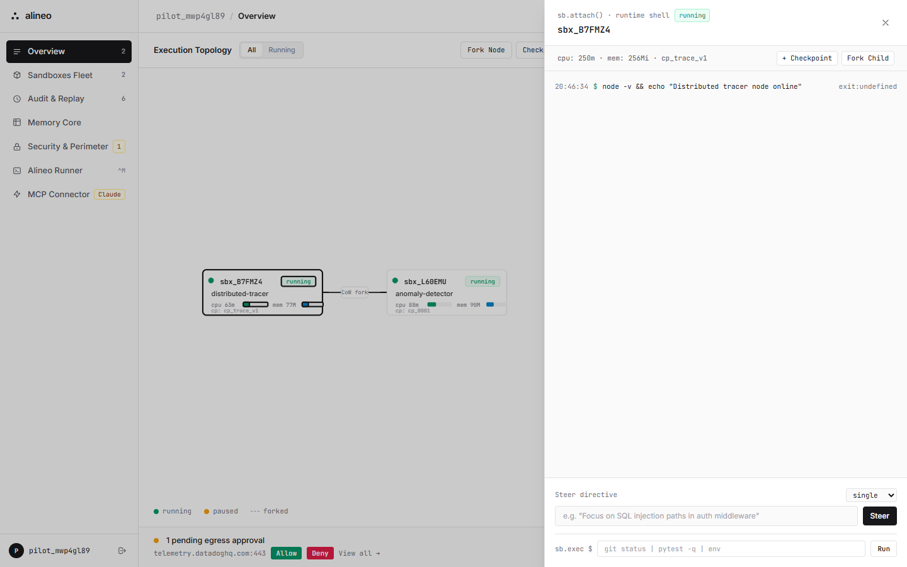
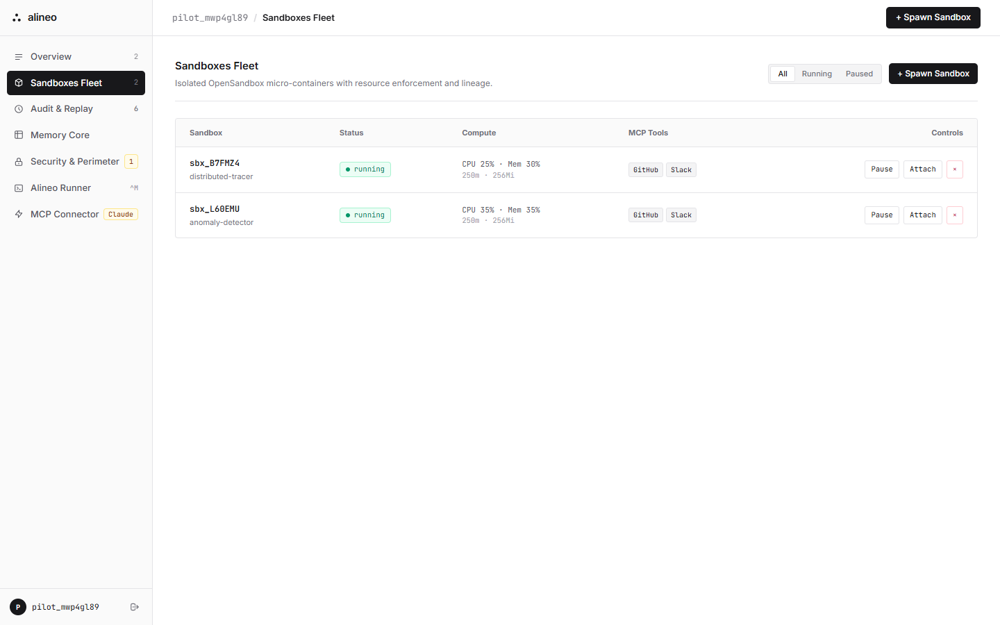
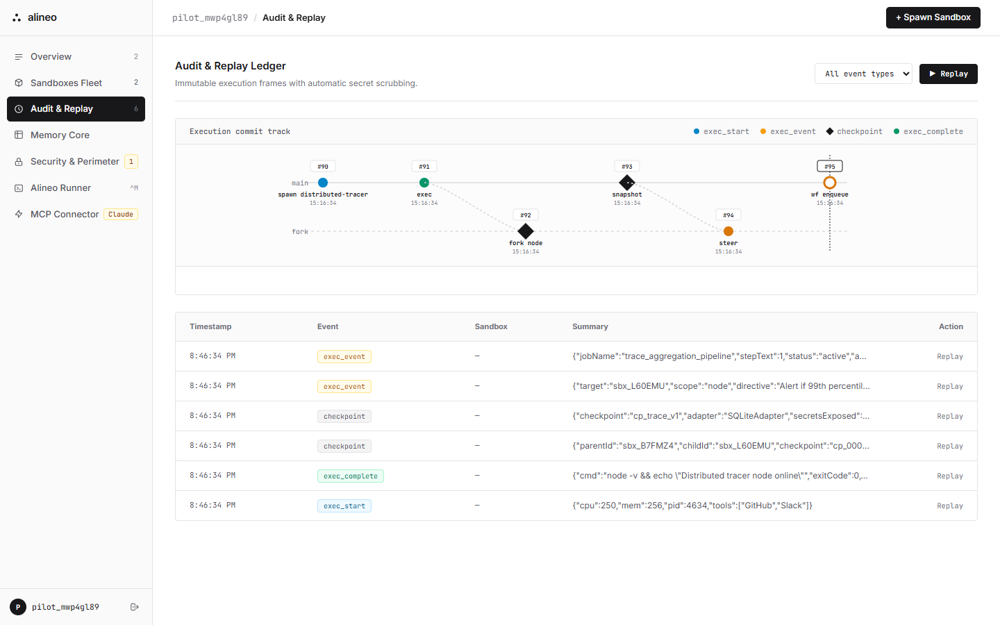
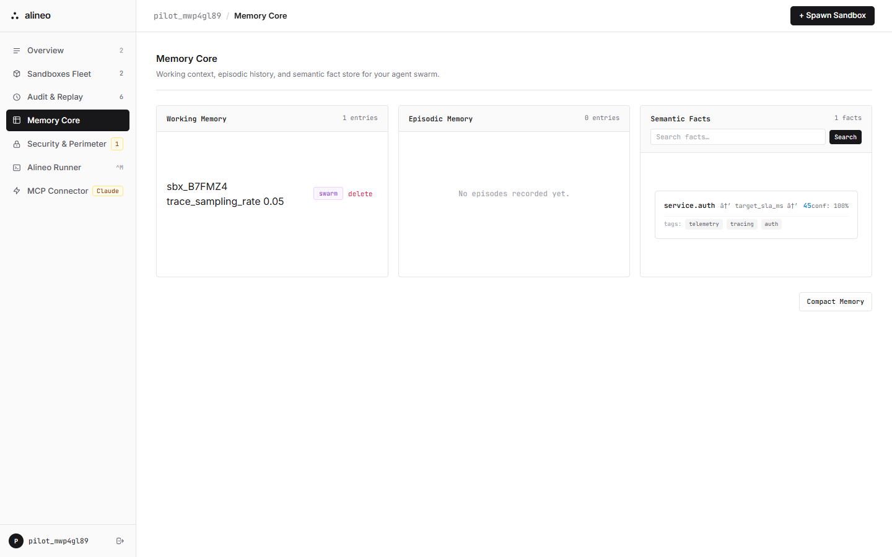
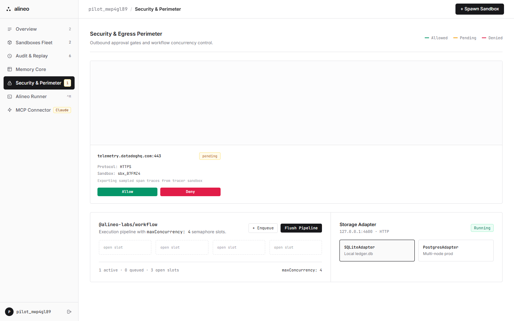
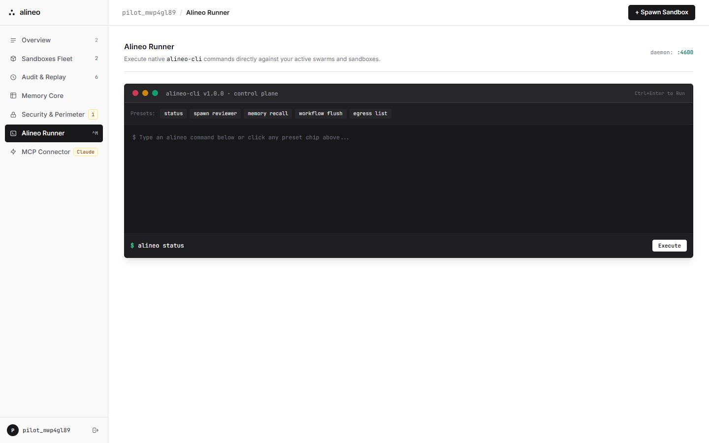
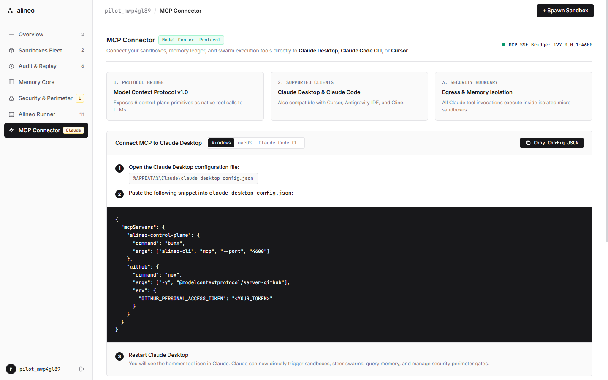

New User Signup → Blank Slate → Custom Micro-Swarm Execution → Claude MCP Connector

Clean standalone login page without background dashboard clutter or hardcoded credential buttons.








